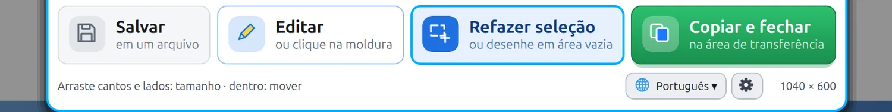
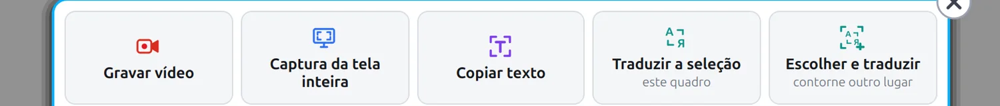
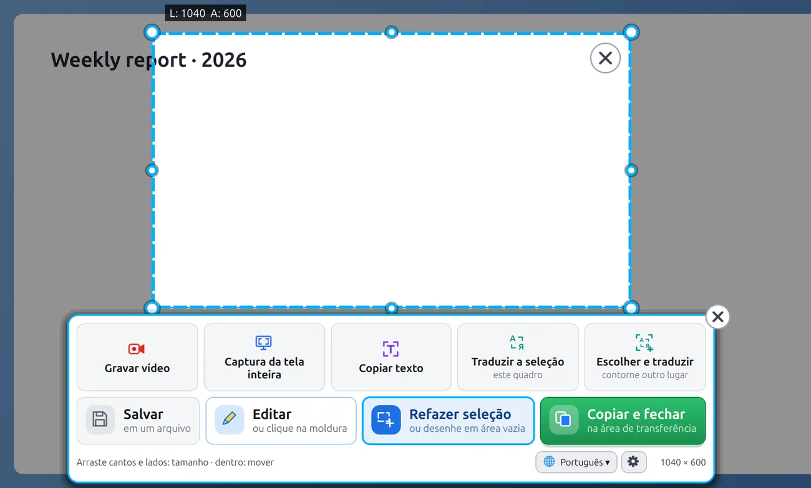
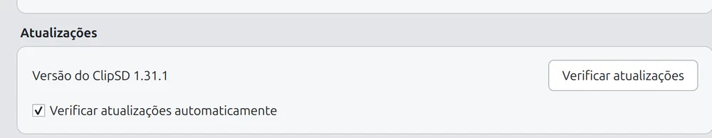
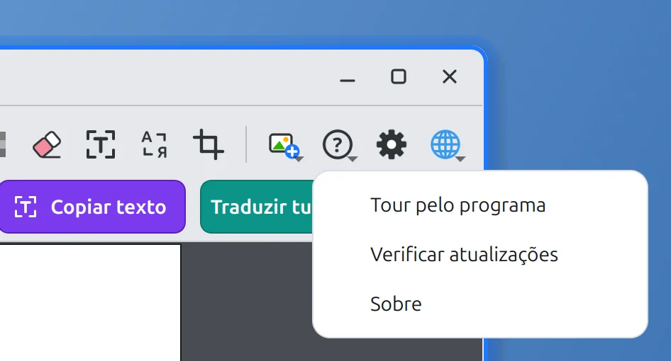
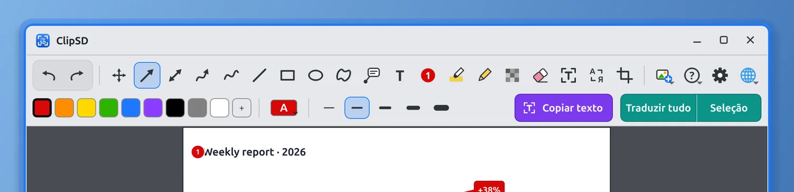
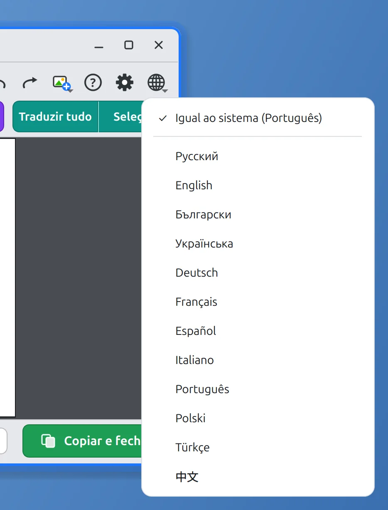
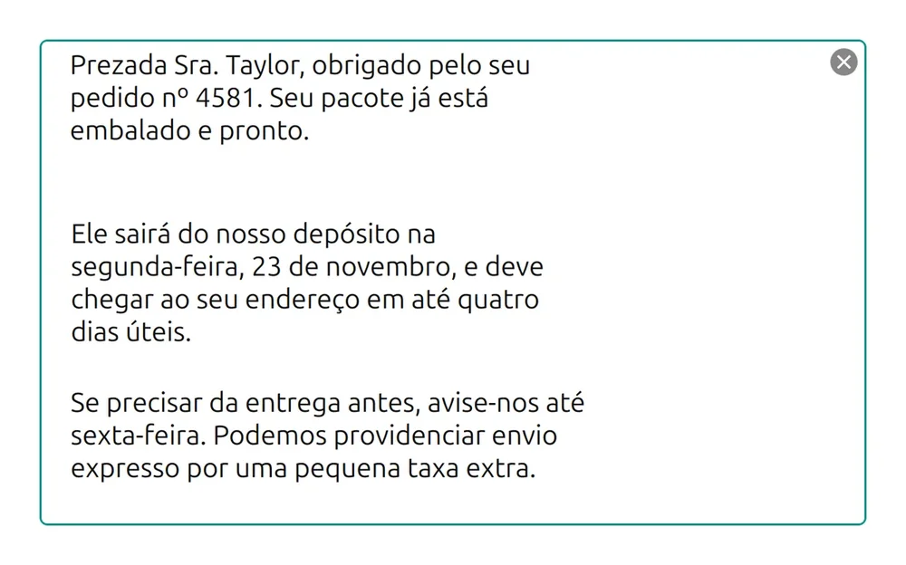
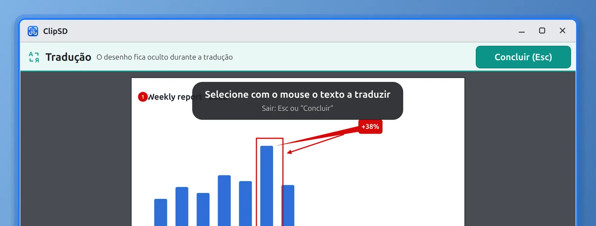

Histórico de versões
Versão 1.31.1
lançada em
- Na janela de seleção de área já é possível mudar o idioma e abrir as configurações na hora: embaixo na barra, à esquerda do tamanho, há um globo com o nome do idioma e uma engrenagem.

- A tradução foi dividida em dois botões: «Traduzir a seleção» traduz o quadro que já está posto e «Escolher e traduzir» deixa contornar outro lugar. Traduzir a tela inteira passou para a linha do modo de tradução, com o botão «Tela inteira».

- A barra da janela de seleção ficou cerca de 15% mais compacta e fica ao lado do quadro, e não por cima: abaixo, acima, à direita ou à esquerda. Ela entra no quadro só se não houver espaço fora.

- As configurações têm uma nova seção «Atualizações»: versão, botão «Verificar atualizações» e caixa de verificação automática. O botão «?» do editor agora abre um menu: «Tour pelo programa», «Verificar atualizações» e «Sobre».


- No editor, «Desfazer» e «Refazer» ficam no começo da fileira, sobre um fundo próprio. Por padrão as ferramentas ficam assim: mover, setas juntas, depois formas, depois o resto. A ordem que você mesmo definiu não muda.

- O ícone do globo é azul-claro em todo lugar e fica mais fácil de achar.
- Linux: corrigida a primeira instalação, que antes podia parar em silêncio no meio do caminho.


Versão 1.31.0
lançada em
- O ClipSD fala 12 idiomas: russo, inglês, búlgaro, ucraniano, alemão, francês, espanhol, italiano, português, polonês, turco e chinês. O idioma muda na hora, sem reiniciar: menu do ícone perto do relógio, globo no editor, primeiro passo do tour ou configurações.

- Novo painel na janela de seleção: em cima, captura da tela inteira, gravação de vídeo, cópia de texto e tradução; embaixo, “Editar”, “Salvar” e “Copiar e fechar”.

- Tradução parte por parte: selecione uma área e a tradução aparecerá sobre o texto; selecione a próxima e ela também será traduzida. Esc encerra o modo.

- Os modos do editor “Copiar texto”, “Recorte” e “Tradução” mostram uma barra em cima com um botão grande para sair; Esc traz de volta a ferramenta anterior.

- O ClipSD se atualiza sozinho. Uma vez por dia, verifica se há uma versão nova e oferece “Atualizar”, “Mais tarde” ou “Ignorar esta versão”. Para verificar agora: menu do ícone, “Verificar atualizações”. A atualização é verificada por meio de uma assinatura digital; se a versão nova não iniciar, a anterior volta.